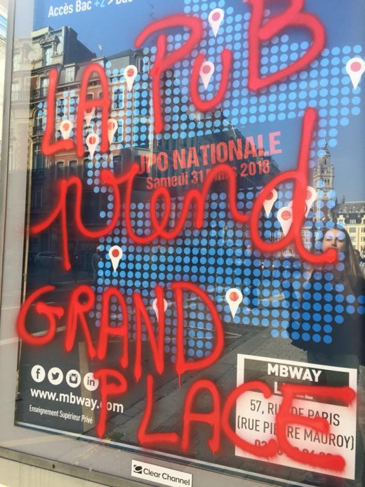
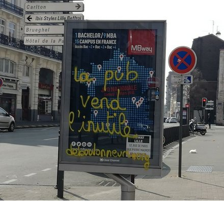

| |
Site dédié à la publication d'informations communiquées par le Collectif des déboulonneurs. En aucun cas ce site n'appelle à des actions illégales. | |
 |
||
|
Accueil du site > Lille > [Lille] 100e action : objectif atteint !
Compte-rendu de l’action du 25 mars 2018Résumé de l’action : Lors de la Journée Mondiale contre la Publicité, nous avons voulu fêter dignement notre 100e action. L’objectif de 100 panneaux a été atteint (et même un peu dépassé). Date : Dimanche 25 mars 2018, de 14h à 17h Lieu de rendez-vous : Place du vieux marché aux chevaux, puis 5 groupes ont sillonné les rues de Lille. Description de l’action : Barbouillage de 114 panneaux publicitaires, principalement des sucettes de 2 m², des aubettes et un 8m². Une tentative de barbouillage de la bâche publicitaire du Palais des Beaux-Arts n’a pas abouti. 
Nombre de participants à l’action : une dizaine de barbouilleurs, une cinquantaine de soutiens. Slogans : impossible de tous les citer, mais en voici quelques-uns : Ceci n’est plus une pub / M... à la pub / La pub me saoule / Nous, on désobéit / Légitime réponse / Pub=pollution mentale / Espace de cerveau disponible / Ras la Pub / La pub enlaidit la ville / la pub vend l’inutile /... 
Présence de la police : 2 contrôles d’identité Présence de la presse : Pas moins de 7 médias Revue de presse : FRANCE 3 REGION 19/20 (25/03) début 3min10 [CONTACT FM->http://www.mycontact.fr/news/lille-114-panneaux-publicitaires-degrades-lors-d-une-action-anti-pub-20302 Compte-rendu détailléLa Journée mondiale contre la publicité du 25 mars 2018 fut l’occasion pour le Collectif des déboulonneurs de Lille de fêter sa 100e action, avec comme objectif symbolique de barbouiller 100 panneaux ! But largement atteint puisque 10 barbouilleurs-ses de Lille et d’ailleurs (dont 2 néophytes) ont touché pas moins de 114 panneaux à travers la ville ! Ceci en fanfare et en musique, dans une ambiance de lutte festive. Tout s’est déroulé à merveille. De nombreux médias étaient présents, une cinquante de spectateurs nous ont suivi pendant ces 3 heures d’action ! Et le soleil était même de la partie. Que demander de plus ? Le rendez-vous était donné symboliquement à 14h devant le Café citoyen, qui a vu naître le Collectif lillois en 2006. Douze ans après, et malgré une mairie qui fait la sourde oreille face aux dangers avérés de la publicité, les Déboulonneurs et toute la famille antipub ont montré qu’ils étaient encore bien présents, droits dans leurs bottes, convaincus de mener une action certes illégale mais légitime. Convaincus que la santé physique et mentale des habitant-es primaient sur l’emploi et l’économie (quelle économie pour quels emplois ?), argumentaire simpliste et récurrent de nombre de politiciens. Bref, que délivrer la ville de la publicité était un choix politique, une possibilité concrète comme l’a montré la ville de Grenoble. C’est tout cela et plus encore qui a été rappelé au mégaphone avant l’action aux nombreux médias présents, ainsi qu’à la cinquantaine de spectateurs-trices présent-es (ce qui est peu au regard des centaines de lillois-es qui nous ont suivis depuis toutes ces années et qui auraient pu constituer une "masse critique antipub", mais ce sera pour la prochaine fois !) Un grand merci donc à toutes ces personnes qui se déplacées pour nous soutenir, ainsi qu’à la fanfare des luttes et aux accordéons des DésOrientés, qui ont permis d’insuffler une ambiance encore plus festive et conviviale, de l’avis de tous. 100 actions, 89 barbouillages, 3 démontages de panneaux, 15 arrestations, 2 gardes à vue et 2 procès, tel est le bilan du Collectif lillois qui a donc entamé ce dimanche une nouvelle action de désobéissance civile non-violente, assumée, au grand jour. 5 groupes se sont répartis 5 zones différentes pour toucher un maximum de panneaux en un minimum de temps. Les habitants de Lille ont donc pu admirer nombre de messages antipubs, qui ont fleuri sur les "sucettes" publicitaires (panneaux de 1x2m) "Ceci n’est plus une pub / M... à la pub / La pub nous saoûle / Nous, on désobéit / Légitime réponse / Pub = pollution mentale / Espace de cerveau disponible / Ras la Pub / Pub = Pollution visuelle / 100 pubs — Sans pub / J’aime barbouiller les pubs / Pub = gaspillage / La pub enlaidit la ville / La pub vend l’inutile / La pub empêche de penser / Qui paie la pub ? / Pub = bourrage de crâne / La pub nous agresse Résistons ! / On se réapproprie l’espace public / Pub = prison visuelle / Faites l’amour, pas les magasins / Stop à la lobotomie / La pub cible les enfants / Ville vendue à la pub / Droit de non-réception / Ceci est un droit de réponse / Publicité partout, beauté nulle part / Cette publicité cache la vérité / La publicité empêche de rêver / Aliénation matérialiste / Nous, on désobéit / Publicité = viol sous hypnose / La pub c’est mal / Nous, des cibles ? / Je dépense donc je suis / Pub : de l’art ou dollars ? / Pub = danger / Légitime réponse / Marée noire sur la matière grise / + 2 pubs - 2 place / Légitime réponse à l’agression publicitaire / Soyons notre propre média / Ici bientôt un arbre / Plus d’art moins de pub / etc. Pour anecdote, un chef marketing a montré son mécontentement du haut de sa fenêtre et nous a menacé de ne pas montré sa photo sous peine de montrer les photos qu’il a prises à la police (montrant ainsi qu’il n’avait pas saisi la démarche de désobéissance civile non-violente puisque nous assumons nos actes face à la police !). Et dans un autre groupe, un conducteur outré par notre action, a appelé la police puis a suivi les deux barbouilleurs (qui continuaient leur parcours) jusqu’à ce que les policiers arrivent. Accompagné de sa fille, il trouvait scandaleux de s’attaquer au bien public et de montrer cet exemple aux enfants, ce à quoi a été répondu qu’au contraire, nous faisions ça pour l’avenir de nos enfants, que la désobéissance faisait partie de l’éducation, et qu’au passage, mais c’est très important, nous ne dégradions pas un bien public mais un bien privé !! Résultat des courses, après un contrôle d’identité, les deux barbouilleurs ont été laissés libres et ont pu rejoindre après un certain temps les 4 autres groupes, réunis place de la République pour le grand final, et qui ont patienté en écoutant des poèmes récités par Yvan Gradis, un des membres fondateurs du Collectif des Déboulonneurs. Pour clore cette 100e action, et après avoir barbouillé 114 panneaux, nous nous sommes rassemblés devant le Palais des Beaux-Arts (publicitaires), face à la bâche de pub géante qui recouvre le musée lors des travaux de rénovation. Martine Aubry avait assuré que les publicités seraient conformes aux valeurs de la ville. Apparemment, une des valeurs de la ville de Lille (déjà bien polluée) est la pollution de l’environnement par une grosse voiture. Comme une palissade nous empêche de nous en approcher, et que la cible est très haute, nous nous sommes munis d’un "patator", pour propulser de la peinture sur la bâche. Hélas, deux tentatives n’ont pas permis de maculer la pub, même si certains témoins assurent que la patate qui sert à propulser le petit pot de peinture a elle bien touché l’objectif. Il n’empêche, attaquer cette cible très lointaine à l’aide cet objet étonnant nous a enthousiasmé et poussé à recommencer un jour, pour cette fois l’atteindre. Désobéir à la pensée unique. Lancer l’alerte sur les dangers environnementaux, sociaux et sanitaires de la publicité. Dire non. Dans la joie. Merci à toutes et à tous ! |
|
Site utilisant SPIP - Hébergement Ouvaton
|